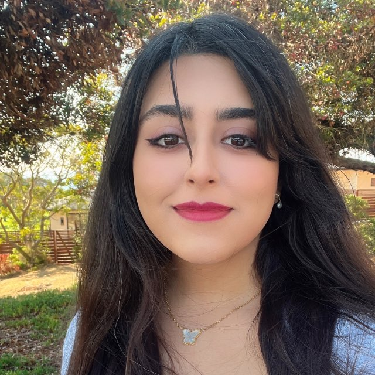

2026 · arXiv preprint
ORBIT: Training-Free Multi-Attribute Behavioral Steering via Orthogonal Subspace Rotation
Steering several behavioral attributes at once through a joint activation subspace and a single norm-preserving rotation.
Computer Science · University of Southern California
I’m a Ph.D. student in Computer Science at USC, where I’m fortunate to work with Prof. Jonathan May at CUTELABNAME, USC Information Sciences Institute.
My research focuses on low-resource language adaptation, language model interpretability, and steering. I’m interested in how we can better understand model behavior and make language models more reliable across languages and tasks.
Previously, I worked on geospatial computer vision and generative modeling at USC’s InfoLab, using autoregressive and diffusion models to connect imagery with geographic information. I received my B.Sc. in Computer Engineering from Shahid Beheshti University.

Language & behavior
Adapting open-weight models to low-resource languages through synthetic data, continued pretraining, and translation fine-tuning.
Training-free steering, causal tests of chain-of-thought faithfulness, and activation-based studies of bias and deception.
Publications & manuscripts
* Equal contribution
2026 · arXiv preprint
Steering several behavioral attributes at once through a joint activation subspace and a single norm-preserving rotation.
2025 · IEEE ICDM
Predicting where an image was taken by generating a hierarchical sequence of location tokens.
2025 · NeurIPS UrbanAI Workshop
Using OpenStreetMap data to control the structure of diffusion-generated satellite images.
2025 · International Symposium on Visual Computing
2025 · International Conference on Multimedia Modeling
2024 · IMPROVE
Modeling respiratory motion in 4D CT scans for radiotherapy planning.
Research & education
Jul 2025 to present
CUTELABNAME · Advisor: Prof. Jonathan May
Aug 2023 to Jul 2025
Geospatial vision, autoregressive modeling, and satellite image synthesis.
Sep 2022 to Feb 2023
Image Processing & Distributed Systems Lab
Advisor: Prof. Mohsen Ebrahimi Moghadam
Jun to Sep 2021
CNN–LSTM modeling for stock price and trend prediction.
2023 to 2029 (expected)
University of Southern California
2018 to 2023
Shahid Beheshti University
Ranked 1st of 131 students
Selected work
Combining visual and spatial features through contrastive learning for georeferenced image representations.
Graph neural networks with language-model semantic embeddings for predicting point-of-interest visits.
Urban traffic analysis with YOLO detection and DeepSORT / StrongSORT tracking.
Removing flash reflections from images with a U-Net model.
Persian news classification with SVM and feature engineering. Ranked 2nd in a Kaggle competition.
OthelloTetris in Assembly 8086Minesweeper in MATLAB2CarsJetpack
Teaching assistant
Machine Learning for Data Science; Introduction to Artificial Intelligence.
Los Angeles, CA
I’m happy to connect about language models, multilingual NLP, and related research.
nghasemi@usc.edu